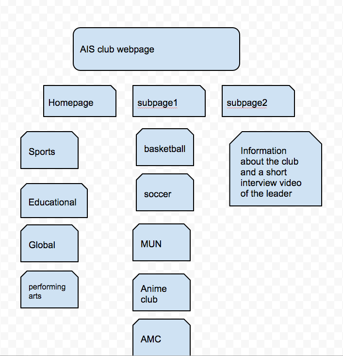
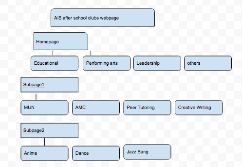
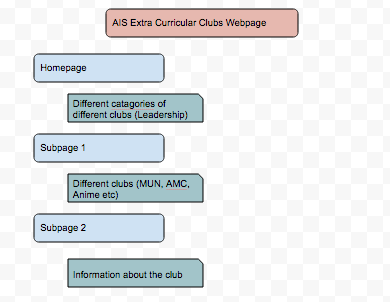
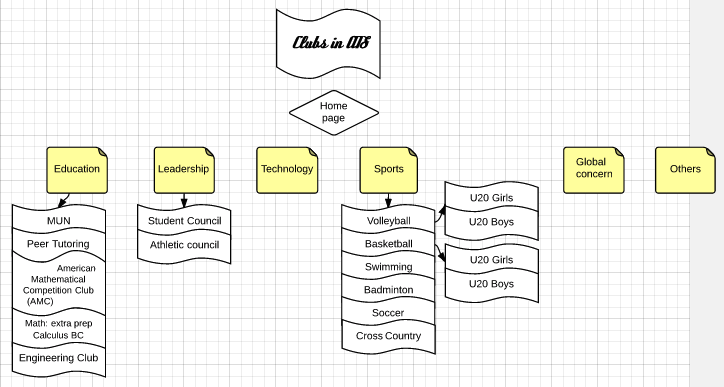

The flowcharts that were made
Flowchart Idea 1

Flowchart Idea 2

Flowchart Idea 3

This is our chosen flowchart

- we chose this flowchart as our final flowchart because it looks the most similar to our idea we have in mind. It is easier for us to create the website with this flowchart since it is very similar.